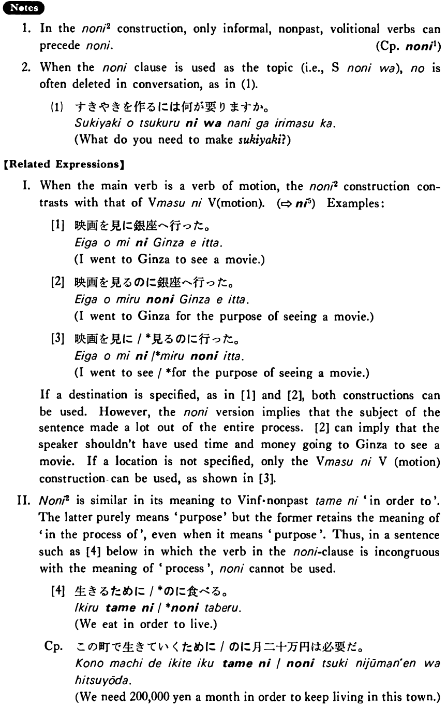

のに (2) (B. 335)
- (ks).
- 私は日本語の新聞を読むのに辞書を使う・使います。
- I used a dictionary to read Japanese newspapers.
- (a).
- すき焼きを作るのには何が要りますか。
- What do you need to make sukiyaki?
- (b).
- このレポートを書くのに一ヶ月かかりました。
- It took me a month to write this paper.
- (c).
- 会社に行くのにバスと電車を使っている。
- I am using the bus and the train to get to my company.
